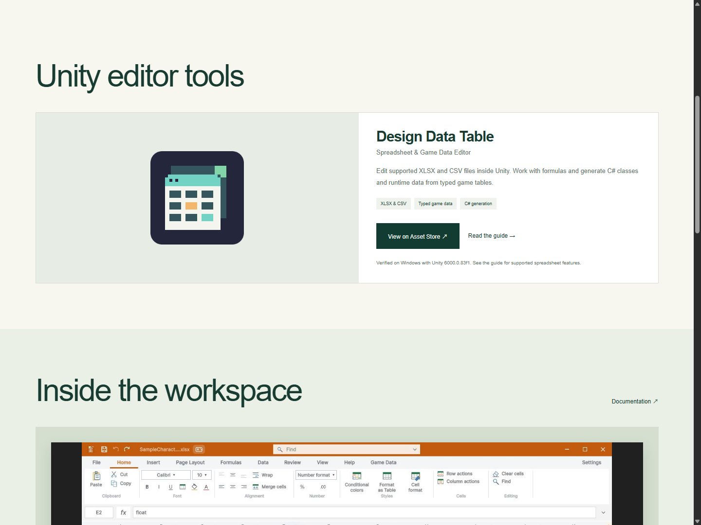
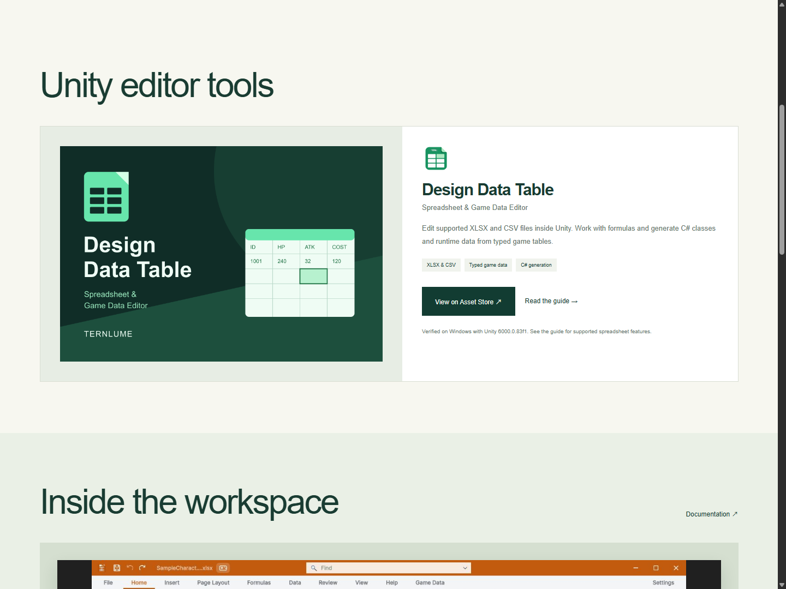
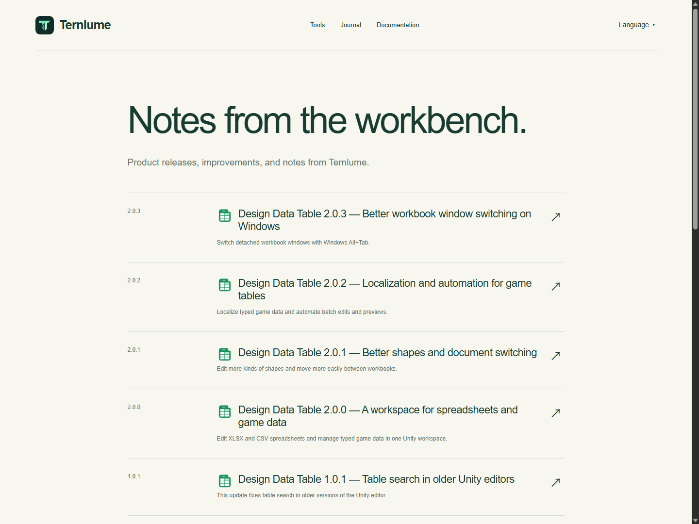
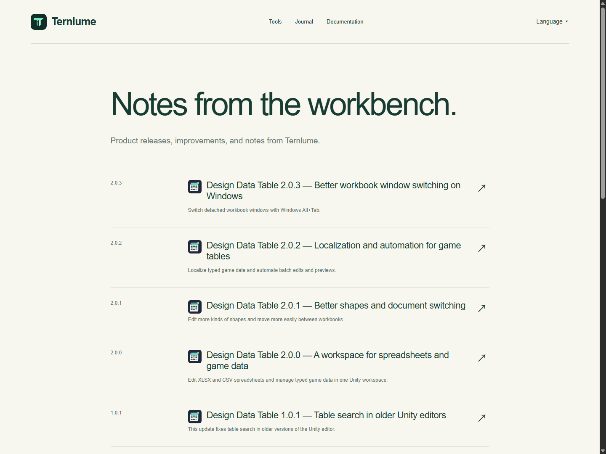
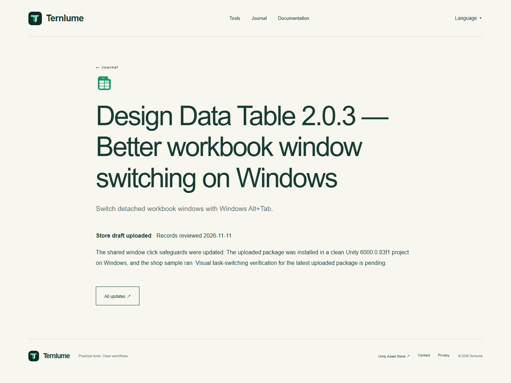
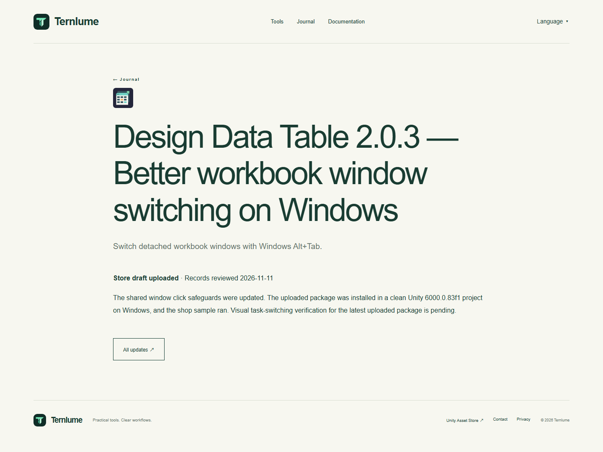

Tracefolio REPORTS & ISSUES
Tracefolio REPORTS & ISSUES턴턴룸 › 공통 · 통합 작업수정사항
Ternlume의 Design Data Table 로고 교체
완료제품에 포함된 둥근 픽셀 로고를 웹사이트의 제품 카드, 게시물과 공유 미리보기에 적용했습니다.
작업 결과
기존 Ternlume 주소에서 현재 Design Data Table 제품과 동일한 로고를 제공합니다. 제품 카드 · 버전별 글
변경 내용
적용 내용

홈 커버 이미지에도 이전 로고가 들어 있어서, 그 자리에는 현재 로고를 직접 표시했습니다. Journal 목록, 버전별 개별 글과 공유 미리보기는 같은 로고 파일을 참조합니다. 이미지와 사이트 스타일의 캐시 갱신을 위해 파일 내용의 해시를 URL에 포함합니다.
const logoFile = 'design-data-table-logo.png';
const logo = await readFile(new URL(`../site/assets/${logoFile}`, import.meta.url));
const logoVersion = createHash('sha256').update(logo).digest('hex').slice(0, 12);
export const designDataTableLogo = `/assets/${logoFile}?v=${logoVersion}`;
flowchart LR A["현재 제품 로고 PNG"] --> B["웹사이트 로고 파일과 SHA-256 대조"] B --> C["로고 내용 해시가 포함된 URL"] C --> D["홈 카드"] C --> E["Journal과 개별 글"] C --> F["공유 미리보기"]
대화 기록
- 사용자 · “DDT로고가 예전꺼쓰네 교체 좀”
- Codex · 제품에 포함된 둥근 픽셀 로고를 확인하고 사이트에 남은 세 표시 위치를 교체했습니다.
검증
로컬 HTML 183개 및 참조 4,928개를 검사했습니다. 웹사이트 PNG와 제품 원본 SHA-256을 대조했습니다. 공개 페이지 171개를 빌드 출력과 비교하고 실제 브라우저에서 홈·목록·개별 글의 로고 이미지 로드를 확인했습니다.

 
 
남은 사항
프로덕션 주소에 직접 배포했습니다. Unity 제품에서 사용 중인 PNG를 그대로 복사했으며 새 미디어 제작은 없었습니다. 기존 원본 커버는 기록으로 보존했습니다.
작업 시간
- 제안 시간: 5~10분.
- 실제로 완료된 시간: 2026-11-11 09:03:40 KST 시작, 09:07:37 KST에 공개 로고와 페이지 대조 완료. 3분 57초. 작업 보고서 공개 확인 별도.
- XERJ: 미사용 — 웹 템플릿과 제품 로고 파일, 해시, 공개 사이트 이미지 응답을 확인했습니다.